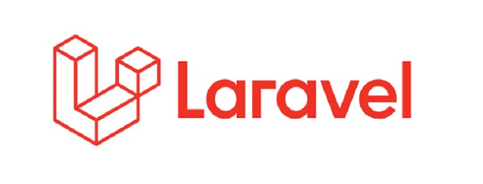

Sebelum pembahasan mengenai Framework PHP, sebelumnya saya ingin memberitahu framework itu apasih? apa fungsinya?. Nah disini saya akan memberitahu sekilas tentang Framework
Framework adalah kerangka kerja untuk mengembangkan aplikasi berbasis website atau desktop. Kerangka kerja diciptakan untuk mempermudah kinerja dari programmer. Sehingga programmer tidak perlu menulis kode secara berulang-ulang.
Nah dari penjelasan tersebut, kita bisa tahu kalau Framework itu sebuah platform untuk mengembangkan aplikasi berbasis web atau desktop.
Framework PHP adalah platform yang digunakan sebagai kerangka kerja untuk membangun aplikasi web berbasis PHP.
Framework ini berisi Library dengan fungsi dan juga elemen untuk merealisasikan pola desain perangkat lunak. Framework ini membuat kode kita dapat dibaca dan dipahami oleh sesama pengembang yang mungkin mengerjakan proyek yang sama.
PHP Framework memberikan kerangka dasar dalam membuat aplikasi web berbasis PHP. Framework bekerja untuk menstandarisasi dan mempercepat proses pengembangan, mengurangi kesalahan dan keraguan dalam membangun aplikasi.
Setelah mengetahui apa itu Framework PHP, disini saya akan memberitahu sekilas tentang Laravel.
Laravel adalah salah satu contoh dari Framework PHP. Laravel merupakan framework yang dapat membantu web developer dalam memaksimalkan penggunaan PHP dalam proses pengembangan website.
Framework ini mengikuti struktur MVC atau Model View Controller. Dimana MVC adalah metode aplikasi yang memisahkan data dari tampilan berdasarkan komponen-komponen aplikasi, seperti manipulasi data, controller, dan user interface.
Penggunaan struktur MVC ini membuat Laravel mudah untuk dipelajari dan mampu mempercepat proses pembuatan prototipe aplikasi web. Sebagaimana ia juga menyediakan fitur bawaan seperti otentikasi, mail, perutean, sesi, dan daftar berjalan.
Menyediakan dukungan untuk hampir semua mesin database. Ia bekerja sempurna dengan MySQL dan SQLite. Ia pun menyediakan dokumentasi lengkap untuk semua fungsi Eloquent.
Mampu mendesain layout yang unik.
Mendukung proses pengecekan dengan PHPUnit dan file phpunit.xml yang dapat disesuaikan dengan aplikasi web yang sedang dibangun.
Menyediakan antarmuka yang lancar untuk membuat dan menjalankan database quer Fitur ini dapat digunakan untuk menjalankan berbagai operasi database di dalam website dan mendukung berbagai sistem database.
Mungkin itu saja penjelasan singkat tentang framework, laravel, fitur-fitur yang ditawarkan laravel, kelebihan dan kekurangan laravel.
Sebagaimana penjelasan di atas, Laravel memungkinkan para web developer untuk melakukan proses pengembangan website yang lebih cepat, sehingga bisa mengehemat lebih banyak waktu dan tenaga. Sekian dan Terimakasih.